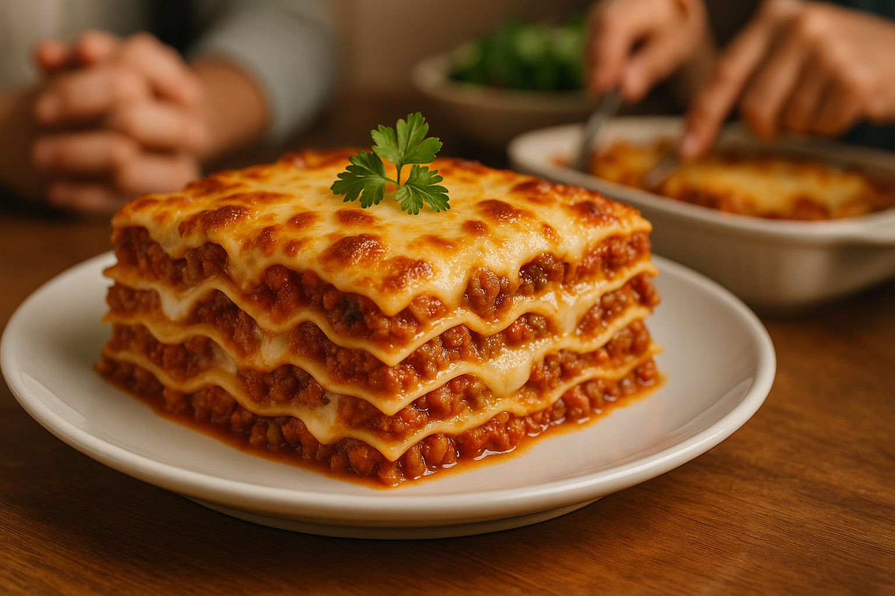
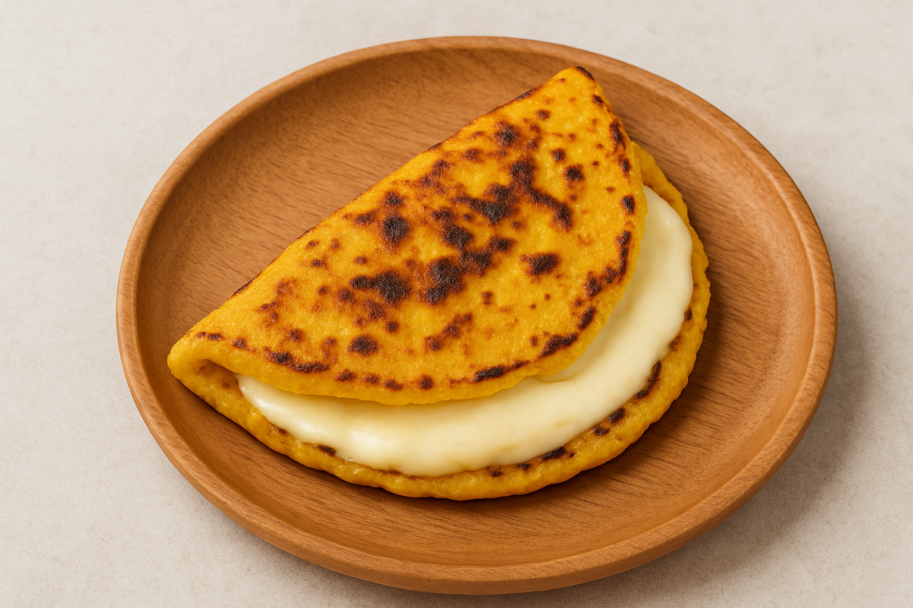

Featured Recipes

Arepa
A golden cornmeal patty, crispy outside and soft inside, perfect for filling with cheese, meats, or vegetables—an iconic taste of Venezuela.
View Recipe

Pasticho (Venezuelan Lasagna)
A Venezuelan twist on lasagna—layers of pasta, savory meat sauce, creamy béchamel, and melted cheese, baked to golden perfection.
View Recipe

Cachapa
A traditional Venezuelan corn pancake, thick and golden, made from fresh ground corn with a naturally sweet flavor. Often served folded around soft cheese.
View Recipe